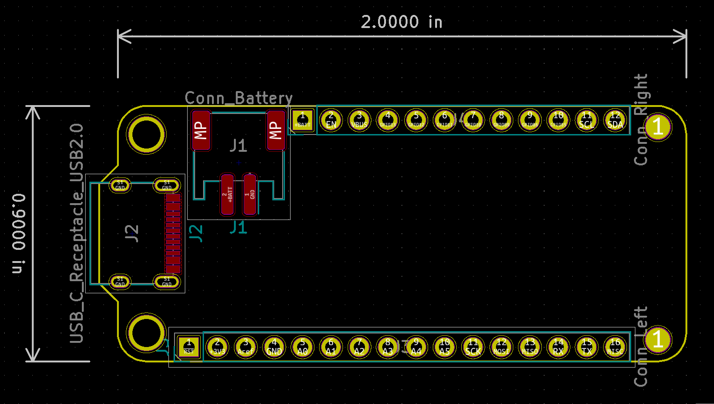

This project template was created based on the Adafruit Feather Specification.
A starting layout for designing your own Feather board, with an outline, mounting holes, headers, USB-C connector, and JST PH battery connector.
The PCB is unrouted. USB-C CC and data wiring, power circuitry, the controller, and the application circuit remain to be designed. The source uses legacy KiCad 5 formats.
The board outline looks like the following:

This project is open source. Based on the original work by:
(c) 2019 arturo182
USB-C adaptation by Michael Cutler, 2020. Distributed under the upstream CC BY-SA 4.0 licence with the KiCad library exception.